공조냉동기계기사(구) (2020-09-26 기출문제)
1과목: 기계열역학
1. 이상적인 디젤 기관의 압축비가 16 일 때 압축 전의 공기 온도가 90℃ 라면 압축 후의 공기 온도(℃)는 얼마인가? (단, 공기의 비열비는 1.4이다.)
- 1101.9
- 718.7
- 808.2
- 827.4
(정답률: 43%)

2. 풍선에 공기 2kg이 들어 있다. 일정 압력 500kPa 하에서 가열 팽창하여 체적이 1.2배가 되었다. 공기의 초기온도가 20℃일 때 최종 온도(℃)는 얼마인가?
- 32.4
- 53.7
- 78.6
- 92.3
(정답률: 48%)
3. 자동차 엔진을 수리한 후 실린더 블록과 헤드 사이에 수리 전과 비교하여 더 두꺼운 개스킷을 넣었다면 압축비와 열효율은 어떻게 되겠는가?
- 압축비는 감소하고, 열효율도 감소한다.
- 압축비는 감소하고, 열효율도 증가한다.
- 압축비는 증가하고, 열효율도 감소한다.
- 압축비는 증가하고, 열효율도 증가한다.
(정답률: 39%)
4. 밀폐계에서 기체의 압력이 100kPa으로 일정하게 유지되면서 체적이 1m3에서 2m3으로 증가되었을 때 옳은 설명은?
- 밀폐계의 에너지 변화는 없다.
- 외부로 행한 일은 100kJ이다.
- 기체가 이상기체라면 온도가 일정하다.
- 기체가 받은 열은 100kJ이다.
(정답률: 53%)
5. 엔트로피(s) 변화 등과 같은 직접 측정할 수 없는 양들을 압력(P), 비체적(v), 온도(T)와 같은 측정 가능한 상태량으로 나타내는 Maxwell 관계식과 관련하여 다음 중 틀린 것은?
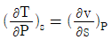
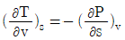
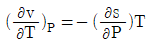
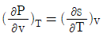
(정답률: 44%)
6. 어떤 가스의 비내부에너지 u(kJ/kg), 온도 t(℃), 압력 P(kPa), 비체적 v(m3/kg) 사이에는 아래의 관계식이 성립한다면, 이 가스의 정압비열(kJ/kgㆍ℃)은 얼마인가?
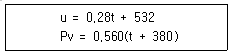
- 0.84
- 0.68
- 0.50
- 0.28
(정답률: 42%)
7. 최고온도 1300K와 최저온도 300K 사이에서 작동하는 공기표준 Brayton 사이클의 열효율(%)은? (단, 압력비는 9, 공기의 비열비는 1.4 이다.)
- 30.4
- 36.5
- 42.1
- 46.6
(정답률: 38%)
8. 그림과 같이 A, B 두 종류의 기체가 한 용기 안에서 박막으로 분리되어 있다. A의 체적은 0.1m3, 질량은 2kg이고, B의 체적은 0.4m3, 밀도는 1kg/m3이다. 박막이 파열되고 난 후에 평형에 도달하였을 때 기체의 혼합물의 밀도(kg/m3)는 얼마인가?
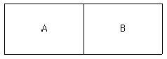
- 4.8
- 6.0
- 7.2
- 8.4
(정답률: 48%)
9. 냉매로서 갖추어야 될 요구 조건으로 적합하지 않은 것은?
- 불활성이고 안정하며 비가연성 이어야 한다.
- 비체적이 커야 한다.
- 증발 온도에서 높은 잠열을 가져야 한다.
- 열전도율이 커야한다.
(정답률: 58%)
10. 내부 에너지가 30kJ인 물체에 열을 가하여 내부 에너지가 50kJ이 되는 동안에 외부에 대하여 10kJ의 일을 하였다. 이 물체에 가해진 열량(kJ)은?
- 10
- 20
- 30
- 60
(정답률: 50%)
11. 비가역 단열변화에 있어서 엔트로피 변화량은 어떻게 되는가?
- 증가한다.
- 감소한다.
- 변화량은 없다.
- 증가할 수도 감소할 수도 있다.
(정답률: 43%)
12. 고온 열원의 온도가 700℃이고, 저온 열원의 온도가 50℃인 카르노 열기관의 열효율(%)은?
- 33.4
- 50.1
- 66.8
- 78.9
(정답률: 55%)
13. 원형 실린더를 마찰 없는 피스톤이 덮고 있다. 피스톤에 비선형 스프링이 연결되고 실린더 내의 기체가 팽창하면서 스프링이 압축된다. 스프링의 압축 길이가 Xm일 때 피스톤에는 kX1.5N의 힘이 걸린다. 스프링의 압축 길이가 0m에서 0.1m로 변하는 동안에 피스톤이 하는 일이 Wa이고, 0.1m에서 0.2m로 변하는 동안에 하는 일이 Wb라면 Wa/Wb는 얼마인가?
- 0.083
- 0.158
- 0.214
- 0.333
(정답률: 31%)
14. 어떤 이상기체 1kg이 압력 100kPa, 온도 30℃의 상태에서 체적 0.8m3을 점유한다면 기체상수(kJ/kgㆍK)는 얼마인가?
- 0.251
- 0.264
- 0.275
- 0.293
(정답률: 50%)
15. 처음 압력이 500kPa이고, 체적이 2m3인 기체가 "PV=일정"인 과정으로 압력이 100kPa까지 팽창할 때 밀폐계가 하는 일(kJ)을 나타내는 계산식으로 옳은 것은?
- 1000ln 2/5
- 1000ln 5/2
- 1000ln 5
- 1000ln 1/5
(정답률: 45%)
16. 다음 중 경로함수(path function)는?
- 엔탈피
- 엔트로피
- 내부에너지
- 일
(정답률: 56%)
17. 이상적인 가역과정에서 열량 △Q가 전달될 때, 온도 T가 일정하면 엔트로피 변화 △S를 구하는 계산식으로 옳은 것은?
- △S = 1-△Q/T
- △S = 1-T/△Q
- △S = △Q/T
- △S = T/△Q
(정답률: 57%)
18. 성능계수가 3.2인 냉동기가 시간당 20MJ의 열을 흡수한다면 이 냉동기의 소비동력(kW)은?
- 2.25
- 1.74
- 2.85
- 1.45
(정답률: 48%)
19. 랭킨사이클에서 25℃, 0.01MPa 압력의 물1kg을 5MPa 압력의 보일러로 공급한다. 이때 펌프가 가역단열과정으로 작용한다고 가정할 경우 펌프가 한 일(kJ)은? (단, 물의 비체적은 0.001m3/kg이다.)
- 2.58
- 4.99
- 20.12
- 40.24
(정답률: 53%)
20. 랭킨사이클의 각 점에서의 엔탈피가 아래와 같을 때 사이클의 이론 열효율(%)은?
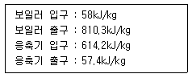
- 32
- 30
- 28
- 26
(정답률: 44%)
2과목: 냉동공학
21. 열의 종류에 대한 설명으로 옳은 것은?
- 고체에서 기체가 될 때에 필요한 열을 증발열이라 한다.
- 온도의 변화를 일으켜 온도계에 나타나는 열을 잠열이라 한다.
- 기체에서 액체로 될 때 제거해야 하는 열은 응축열 또는 감열이라 한다.
- 고체에서 액체로 될 때 필요한 열은 융해열이며 이를 잠열이라 한다.
(정답률: 54%)
22. 응축압력 및 증발압력이 일정할 때 압축기의 흡입증기 파열도가 크게 된 경우 나타나는 현상으로 옳은 것은?(오류 신고가 접수된 문제입니다. 반드시 정답과 해설을 확인하시기 바랍니다.)
- 냉매순환량이 증대한다.
- 증발기의 냉동능력은 증대한다.
- 압축기의 토출가스 온도가 상승한다.
- 압축기의 체적효율은 변하지 않는다.
(정답률: 52%)
23. 중간냉각이 완전한 2단압축 1단팽창 사이클로 운전되는 R134a 냉동기가 있다. 냉동능력은 10kW 이며, 사이클의 중간압, 저압부의 압력은 각각 350kPa, 120kPa이다. 전체 냉매순환량을 m, 증발기에서 증발하는 냉매의 양을 me라 할 때, 중간냉각시키기 위해 바이패스되는 냉매의 양 m-me(kg/h)은 얼마인가? (단, 제1압축기의 입구 과열도는 0이며, 각 엔탈피는 아래 표를 참고한다.)
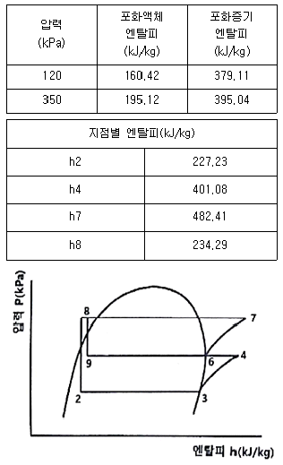
- 5.8
- 11.1
- 15.7
- 19.3
(정답률: 15%)
24. 진공압력이 60mmHg일 경우 절대압력(kPa)은? (단, 대기압은 101.3kPA이고 수은의 비중은 13.6이다.)
- 53.8
- 93.2
- 106.6
- 196.4
(정답률: 40%)
25. 다음 중 대기 중의 오존층을 가장 많이 파괴시키는 물질은?
- 질소
- 수소
- 염소
- 산소
(정답률: 53%)
26. 물(H2O)- 리튬브로마이드(LiBr) 흡수식 냉동기에 대한 설명으로 틀린 것은?
- 특수 처리한 순수한 물의 냉매로 사용한다.
- 4~15℃정도의 냉수를 얻는 기기로 일반적으로 냉수온도는 출구온도 7℃정도를 얻도록 설계한다.
- LiBr 수용액은 성질이 소금물과 유사하여, 농도가 진하고 온도가 낮을수록 냉매증기를 잘 흡수한다.
- LiBr의 농도가 진할수록 점도가 높아져 열전도율이 높아진다.
(정답률: 43%)
27. 흡수식 냉동기에서 냉동시스템을 구성하는 기기들 중 냉각수가 필요한 기기의 구성으로 옳은 것은?
- 재생기와 증발기
- 흡수기와 응축기
- 재생기와 응축기
- 증발기와 흡수기
(정답률: 36%)
28. 2중 효용 흡수식 냉동기에 대한 설명으로 틀린 것은?
- 단증 효용 흡수식 냉동기에 비해 증기소비량이 적다.
- 2개의 재생기를 갖고 있다.
- 2개의 증발기를 갖고 있다.
- 증기 대신 가스연소를 사용하기도 한다.
(정답률: 47%)
29. 다음 그림과 같이 수냉식과 공냉식 응축기의 작용을 혼합한 형태의 응축기는?
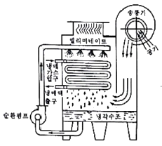
- 증발식 응축기
- 셸코일 응축기
- 공냉식 응축기
- 7통로식 응축기
(정답률: 50%)
30. 다음 중 흡수식-냉동기의 구성요소가 아닌 것은?
- 증발기
- 응축기
- 재생기
- 압축기
(정답률: 59%)
31. 축열장치의 종류로 가장 거리가 먼 것은?
- 수축열 방식
- 잠열축열 방식
- 빙축열 방식
- 공기축열 방식
(정답률: 45%)
32. 어떤 냉동사이클에서 냉동효과를 γ(kJ/kg), 흡입건조 포화증기의 비체적을 v(m3/kg)로 표시하면 NH3와 R-22에 대한 값은 다음과 같다. 사용 압축기의 피스톤 압출량은 NH3와 R-22의 경우 동일하며, 체적효율도 75%로 동일하다. 이 경우 NH3와 R-22압축기의 냉동능력을 각각 RN RF(RT)로 표시한다면 RN/RF는?
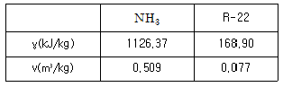
- 0.6
- 0.7
- 1.0
- 1.5
(정답률: 39%)
33. 두께가 0.1cm인 관으로 구성된 옹축기에서 냉각수 입구온도 15℃, 출구온도 21℃, 응축온도를 24℃라고 할 때, 이 응축기의 냉매와 냉각수의 대수평균온도차(℃)는?
- 9.5
- 6.5
- 5.5
- 3.5
(정답률: 46%)
34. 냉각수 입구온도 25℃, 냉각수량 900kg/min인 응축기의 냉각 면적이 80m2, 그 열통과율이 1.6 kW/m2ㆍK이고, 응축온도와 냉각 수온의 평균 온도차가 6.5℃이면 냉각수 출구온도(℃)는? (단, 냉각수의 비열은 4.2kJ/kgㆍK이다.)
- 28.4
- 32.6
- 29.6
- 38.2
(정답률: 28%)
35. 응축기에 관한 설명으로 틀린 것은?
- 응축기의 역할은 저온, 저압의 냉매증기를 냉각하여 액화시키는 것이다.
- 응축기의 용량은 응축기에서 방출하는 열량에 의해 결정된다.
- 응축기의 열부하는 냉동기의 냉동능력과 압축기 소요일의 열당량을 합한 값과 같다.
- 응축기내에서의 냉매상태는 과열영역, 포화영역, 액체영역 등으로 구분할 수 있다.
(정답률: 43%)
36. 이원 냉동 사이클에 대한 설명으로 옳은 것은?
- -100℃ 정도의 저온을 얻고자 할 때 사용되며, 보통 저온측에는 임계점이 높은 냉매를, 고온측에는 임계점이 낮은 냉매를 사용한다.
- 저온부 냉동사이클의 응축기 발열량을 고온부 냉동사이클의 증발기가 흡열하도록 되어있다.
- 일반적으로 저온측에 사용하는 냉매로는 R-12, R-22, 프로판이 적절하다.
- 일반적으로 고온측에 사용하는 냉매로는 R-13, R-14가 적절하다.
(정답률: 43%)
37. 실린더 지름 200mm, 행정 200mm, 400rpm, 기통수 3기통인 냉동기의 냉동능력이 5.72RT이다. 이 때, 냉동효과(kJ/kg)는? (단, 체적효율은 0.75, 압축기의 흡입시의 비체적은 0.5m3/kg이고, 1RT는 3.8kW이다.)
- 115.3
- 110.8
- 89.4
- 68.8
(정답률: 23%)
38. 증기압축식 냉동장치 내에 순환하는 냉매의 부족으로 인해 나타나는 현상이 아닌 것은?
- 증발압력 감소
- 토출온도 증가
- 과냉도 감소
- 과열도 증가
(정답률: 35%)
39. 두께가 200mm인 두꺼운 평판의 한 면(T0)은 600K, 다른 면(T1)은 300K로 유지될 때 단위 면적당 평판을 통한 열전달량(W/m2)은? (단, 열전도율은 온도에 따라 λ(T)=λ0(1+βtm)로 주어지며, λ0는 0.0029 W/mㆍK, β는 3.6×10-3K-1이고, tm은 양 면간의 평균온도이다.)(오류 신고가 접수된 문제입니다. 반드시 정답과 해설을 확인하시기 바랍니다.)
- 114
- 1⑤
- 97
- 83
(정답률: 25%)
40. 냉동장치에서 증발온도를 일정하게 하고 응축온도를 높일 때 나타나는 현상으로 옳은 것은?
- 성적계수 증가
- 압축일량 감소
- 토출가스온도 감소
- 체적효율 감소
(정답률: 44%)
3과목: 공기조화
41. 겨울철 창면을 따라 발생하는 콜드 드래프트(cold draft)의 원인으로 틀린 것은?
- 인체 주위의 기류속도가 클 때
- 주위공기의 습도가 높을 때
- 주위 벽면의 온도가 낮을 때
- 창문의 틈새를 통한 극간풍이 많을 때
(정답률: 49%)
42. 냉각탑에 관한 설명으로 틀린 것은?
- 어프로치는 냉각탑 출구수온과 입구공기 건구온도 차
- 레인지는 냉각수의 입구와 출구의 온도차
- 어프로치를 적게 할수록 설비비 증가
- 어프로치는 일반 공조에서 5℃정도로 설정
(정답률: 41%)
43. 공기조화기에 관한 설명으로 옳은 것은?
- 유닛 히터는 가열코일과 팬, 케이싱으로 구성된다.
- 유인 유닛은 팬만을 내장하고 있다.
- 공기 세정기를 사용하는 경우에는 엘리미네이터를 사용하지 않아도 좋다.
- 팬 코일 유닛은 팬과 코일, 냉동기로 구성된다.
(정답률: 39%)
44. 증기난방 방식에는 환수주관을 보일러 수면보다 높은 위치에 배관하는 환수배관방식은?
- 습식 환수방식
- 강제 환수방식
- 건식 환수방식
- 중력 환수방식
(정답률: 52%)
45. 덕트 내의 풍속이 8m/s이고 정압이 200Pa일 때, 전압(Pa)은 얼마인가? (단, 공기밀도는 1.2kg/m3이다.)
- 197.3Pa
- 218.4Pa
- 238.4Pa
- 255.3Pa
(정답률: 40%)
46. 덕트의 굴곡부 등에서 덕트 내에 흐르는 기류를 안정시키기 위한 목적으로 사용하는 기구는?
- 스플릿 댐퍼
- 가이드 베인
- 릴리프 댐퍼
- 버터플라이 댐퍼
(정답률: 55%)
47. 공조기의 풍량이 45000kg/h, 코일통과 풍속을 2.4m/s로 할 때 냉수코일의 전면적(m2)은? (단, 공기의 밀도는 1.2kg/m3이다.)
- 3.2
- 4.3
- 5.2
- 10.4
(정답률: 44%)
48. 장방형 덕트(장변 a, 단변 b)를 원형덕트로 바꿀 때 사용하는 계산식은 아래와 같다. 이 식으로 환산된 장방형 덕트와 원형덕트의 관계는?
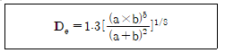
- 두 덕트의 풍량과 단위 길이당 마찰손실이 같다.
- 두 덕트의 풍량과 풍속이 같다.
- 두 덕트의 풍속과 단위 길이당 마살손실이 같다.
- 두 덕트의 풍량과 풍속 및 단위 길이당 마찰 손실이 모두 같다.
(정답률: 49%)
49. 9m × 6m × 3m의 강의실에 10명의 학생이 있다. 1인당 CO2 토출량이 15L/h이면, 실내 CO2 양을 0.1%로 유지시키는데 필요한 환기량(m3/h)은? (단, 외기 CO2양은 0.04%로 한다.)
- 80
- 120
- 180
- 250
(정답률: 34%)
50. 난방용 보일러의 요구조건이 아닌 것은?
- 일상취급 및 보수관리가 용이할 것
- 건물로의 반출입이 용이할 것
- 높이 및 설치면적이 적을 것
- 전열효율이 낮을 것
(정답률: 62%)
51. 온수난방에 대한 설명으로 틀린 것은?
- 증기난방에 비하여 연료소비량이 적다.
- 난방부하에 따라 온도 조절을 용이하게 할 수 있다.
- 축열 용량이 크므로 운전을 정지해도 금방 식지 않는다.
- 예열시간이 짧아 예열부하가 작다.
(정답률: 58%)
52. 온풍난방에 관한 설명으로 틀린 것은?
- 송풍 동력이 크며, 설계가 나쁘면 실내로 소음이 전달되기 쉽다.
- 실온과 함께 실내습도, 실내기류를 제어할 수 있다.
- 실내 충고가 높을 경우에는 상하의 온도차가 크다.
- 예열부하가 크므로 예열시간이 길다.
(정답률: 55%)
53. 일사를 받는 외벽으로부터의 침입열량(q)을 구하는 계산식으로 옳은 것은? (단, K는 열관류율, A는 면적, △t는 상당외기온도차이다.)
- q=K×A×△t
- q=0.86×A/△t
- q=0.24×A×△t/K
- q=0.29×K/(A×△t)
(정답률: 57%)
54. 건구온도(t1) 5℃, 상대습도 80%인 습공기를 공기 가열기를 사용하여 건구온도(t2) 43℃가 되는 가열공기 950m3/h을 얻으려고 한다. 이 때 가열에 필요한 열량(kW)은?
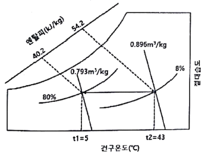
- 2.14
- 4.65
- 8.97
- 11.02
(정답률: 31%)
55. 공기조화설비 중 수분이 공기에 포함되어 실내로 급기되는 것을 방지하기 위해 설치하는 것은?
- 에어와셔
- 에어필터
- 엘리미네이터
- 벤틸레이터
(정답률: 56%)
56. 팬 코일 유닛방식에 대한 설명으로 틀린 것은?
- 일반적으로 사무실, 호텔, 병원 및 점포등에 사용한다.
- 배관방식에 따라 2관식, 4관식으로 분류한다.
- 중앙기계실에서 냉수 또는 온수를 공급하여 각 실에 설치한 팬 코일 유닛에 의해 공조하는 방식이다.
- 팬코일 유닛방식에서 열부하 분담은 내부 존 팬 코일 유닛방식과 외부 존 터미널방식이 있다.
(정답률: 46%)
57. 다음 중 직접 난방방식이 아닌 것은?
- 온풍 난방
- 고온수 난방
- 저압증기 난방
- 복사 난방
(정답률: 42%)
58. 공조기에서 냉ㆍ온풍을 혼합댐퍼에 의해 일정한 비율로 혼합한 후 각 존 또는 각 실로 보내는 공조방식은?
- 단일덕트 재열방식
- 멀티존 유닛 방식
- 단일덕트 방식
- 유인 유닛 방식
(정답률: 48%)
59. 다음 원심송풍기의 풍량제어 방법 중 동일한 송풍량 기준 소요동력이 가장 적은것은?
- 흡입구 베인 제어
- 스크롤 댐퍼 제어
- 토출측 댐퍼 제어
- 회전수 제어
(정답률: 55%)
60. 동일한 송풍기에서 회전수를 2배로 했을 경우 풍량, 정압, 소요동적의 변화에 대한 설명으로 옳은 것은?
- 풍량 1배, 정압 2배, 소요동력 2배
- 풍량 1배, 정압 2배, 소요동력 4배
- 풍량 2배, 정압 4배, 소요동력 4배
- 풍량 2배, 정압 4배, 소요동력 8배
(정답률: 56%)
4과목: 전기제어공학
61. 아래 접점회로의 논리식으로 옳은 것은?
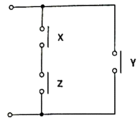
- XㆍYㆍZ
- (X + Y)ㆍZ
- (XㆍZ) + Y
- X + Y + Z
(정답률: 59%)
62. 두 대 이상의 변압기를 병렬 운전하고자 할 때 이상적인 조건으로 틀린 것은?
- 각 변갑기의 극성이 같을 것
- 각 변압기의 손실비가 같을 것
- 정격용량에 비례하여 전류를 분담할 것
- 변압기 상호간 순환전류가 흐르지 않을 것
(정답률: 37%)
63. 다음의 신호흐름선도에서 전달함수 C(s)/R(s)는?
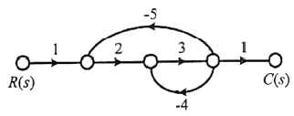
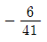
- 6/41

- 6/43
(정답률: 43%)
64. 입력에 대한 출력의 오차가 발생하는 제어시스템에서 오차가 변환하는 속도에 비례하여 조작량을 가변하는 제어 방식은?
- 미분 제어
- 정치 제어
- on-off 제어
- 시퀀스 제어
(정답률: 55%)
65. 시퀀스 제어에 관한 설명으로 틀린 것은?
- 조합논리회로가 사용된다.
- 시간지연요소가 사용된다.
- 제어용 계전기가 사용된다.
- 폐회로 제어계로 사용된다.
(정답률: 53%)
66. 피드백 제어에 관한 설명으로 틀린 것은?
- 정확성이 증가한다.
- 대역폭이 증가한다.
- 입력과 출력의 비를 나타내는 전체이득이 증가한다.
- 개루프 제어에 비해 구조가 비교적 복잡하고 설치비가 많이 든다.
(정답률: 44%)
67. 어떤 코일에 흐르는 전류가 0.01초 사이에 20A에서 10A로 변할 때 20V의 기전력이 발생한다고 하면 자기 인덕턴스(mH)는?
- 10
- 20
- 30
- 50
(정답률: 41%)
68. 절연의 종류를 최고 허용온도가 낮은 것부터 높은 순서로 나열한 것은?
- A종 < Y종 < E종 < B종
- Y종 < A종 < E종 < B종
- E종 < Y종 < B종 < A종
- B종 < A종 < E종 < Y종
(정답률: 50%)
69. 다음 중 전류계에 대한 설명으로 틀린 것은?
- 전류계의 내부저항이 전압계의 내부저항보다 작다.
- 전류계를 회로에 병렬접속하면 계기가 손상될 수 있다.
- 직류용 계기에는 (+), (-)의 단자가 구별되어 있다.
- 전류계의 측정 범위를 확장하기 위해 직렬로 접속한 저항을 분류기라고 한다.
(정답률: 38%)
70. 100V에서 500W를 소비하는 저항이 있다. 이 저항에 100V의 전원을 200V로 바꾸어 접속하면 소비되는 전력(W)은?
- 250
- 500
- 1000
- 2000
(정답률: 38%)
71. 코일에 단상 200V의 전압을 가하면 10A의 전류가 흐르고 1.6kW의 전력을 소비된다. 이 코일과 벙렬로 콘덴서를 접속하여 회로의 합성역률을 100%로 하기 위한 용량 리액턴스(Ω)는 약 얼마인가?
- 11.1
- 22.2
- 33.3
- 44.4
(정답률: 34%)
72. 기계적 제어의 요소로서 변위를 공기압으로 변환하는 요소는?
- 벨로즈
- 트랜지스터
- 다이아프램
- 노즐플래퍼
(정답률: 52%)
73. 다음 회로에서 E=100V, R=4Ω, XL=5Ω XC=2Ω일 때 이 회로에 흐르는 전류(A)는?
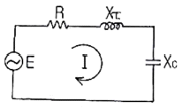
- 10
- 15
- 20
- 25
(정답률: 37%)
74. 다음 블록선도의 전달함수 C(s)/R(s)는?
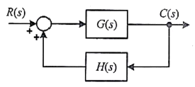
- G(s)/1-G(s)H(s)
- G(s)/1+G(s)H(s)
- H(s)/1-G(s)H(s)
- H(s)/1+G(s)H(s)
(정답률: 49%)
75. 전압을 V, 전류를 I, 저항을 R, 그리고 도체의 비저항 p라 할 때 옴의 법칙을 나타낸 식은?
- V = R/I
- V = I/R
- V = IR
- V = IRρ
(정답률: 62%)
76. 전동기를 전원에 접속한 상태에서 중력부하를 하강시킬 때 속도가 빨라지는 경우 전동기의 유기기전력이 전원전압보다 높아져서 발전기로 동작하고 발생전력을 전원으로 되돌려 줌과 동시에 속도를 감속하는 제동법은?
- 회생제동
- 역전제동
- 발전제동
- 유도제동
(정답률: 54%)
77. 전기기의 전로의 누전여부를 알아보기 위해 사용되는 계측기는?
- 메거
- 전압계
- 전류계
- 검전기
(정답률: 43%)
78. 평형 3상 전원에서 각 상간 전압의 위상차(rad)는?
- π/2
- π/3
- π/6
- (2π)/3
(정답률: 45%)
79. 영구자석의 재료로 요구되는 사항은?
- 잔류자기 및 보자력이 큰 것
- 잔류자기가 크고 보자력이 작은 것
- 잔류자기는 작고 보자력이 큰 것
- 잔류자기 및 보자력이 작은 것
(정답률: 43%)
80. 다음 회로도를 보고 진리표를 채우고자 한다. 빈칸에 알맞은 값은?
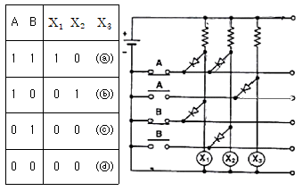
- ⓐ 1, ⓑ 1, ⓒ 0, ⓓ 0
- ⓐ 0, ⓑ 0, ⓒ 1, ⓓ 1
- ⓐ 0, ⓑ 1, ⓒ 0, ⓓ 1
- ⓐ 1, ⓑ 0, ⓒ 1, ⓓ 0
(정답률: 37%)
5과목: 배관일반
81. 급수배관의 수격현상 방지방법으로 가장 거리가 먼 것은?
- 펌프에 플라이휠을 설치한다.
- 관경을 작게 하고 유속을 매우 빠르게 한다.
- 에어챔버를 설치한다.
- 완폐형 체크벨브를 설치한다.
(정답률: 61%)
82. 경질염화비닐관의 TS식 이음에서 작용하는 3가지 접착효과로 가장 거리가 먼 것은?
- 유동삽입
- 일출접착
- 소성삽입
- 변형삽입
(정답률: 37%)
83. 펌프 주위 배관시공에 관한 사항으로 틀린 것은?
- 풋 밸브 등 모든 관의 이음은 수밀, 기밀을 유지할 수 있도록 한다.
- 흡입관의 길이는 가능한 한 짧게 배관하여 저항이 적도록 한다.
- 흡입관의 수평배관은 펌프를 향하여 하향 구배로 한다.
- 양정이 높을 경우 펌프 토출구와 게이트 밸브 사이에 체크밸브를 설치한다.
(정답률: 44%)
84. 무기질 단열재에 관한 설명으로 틀린 것은?
- 암면은 단열성이 우수하고 아스팔트 가공된 보냉용의 경우 흡수성이 양호하다.
- 유리섬유는 가볍고 유연하여 작업성이 매우 좋으며 칼이나 가위 등으로 쉽게 절단된다.
- 탄산마그네슘 보온재는 열전도율이 낮으며 300~320℃에서 열분해한다.
- 규조토 보온재는 비교적 단열효과가 낮으므로 어느 정도 두껍게 시공하는것이 좋다.
(정답률: 38%)
85. 다음 중 기수혼합식(증기분류식) 급탕설비에서 소음을 방지하는 기구는?
- 가열코일
- 사일렌서
- 순환펌프
- 서머스탯
(정답률: 63%)
86. 증기난방법에 관한 설명으로 틀린 것은
- 저압식은 증기의 사용압력이 0.1MPa 미만인 경우이며, 주로 10~35kPa인 증기를 사용한다.
- 단관 중력 환수식의 경우 증기와 응축수가 역류하지 않도록 선단 하향 구배로 한다.
- 환수주관을 보일러 수면보다 높은 위치에 배관한 것은 습식환수관식이다.
- 증기의 순환이 가장 빠르며 방열기, 보일러 등의 설치위치에 제한을 받지 않고 대규모 난방용으로 주로 채택되는 방식은 진공환수식이다.
(정답률: 52%)
87. 같은 지름의 관을 직선으로 연결할 때 사용하는 배관 이음쇠가 아닌 것은?
- 소켓
- 유니언
- 벤드
- 플랜지
(정답률: 53%)
88. 기체 수송 설비에서 압축공기 배관의 부속장치가 아닌 것은?
- 후부냉각기
- 공기여과기
- 안전밸브
- 공기빼기밸브
(정답률: 43%)
89. 가스수요의 시간적 변화에 따라 일정한 가스량을 안전하게 공급하고 저장을 할 수 있는 가스홀더의 종류가 아닌 것은?
- 무수(無水)식
- 유수(有水)식
- 주수(柱水)식
- 구(球)형
(정답률: 50%)
90. 제조소 및 공급소 밖의 도시가스 배관을 시가지 외의 도로 노면 밑에 매설하는 경우에는 도면으로부터 배관의 외면까지 최소 몇 m 이상을 유지해야 하는가?
- 1.0
- 1.2
- 1.5
- 2.0
(정답률: 39%)
91. 다음 도시기호의 이음은?
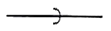
- 나사식 이음
- 용접식 이음
- 소켓식 이음
- 플랜지식 이음
(정답률: 49%)
92. 패킹재의 선정시 고려사항으로 관내 유체의 화학적 성질이 아닌 것은?
- 점도
- 부식성
- 휘발성
- 용해능력
(정답률: 36%)
93. 도시가스 배관 시 배관이 움직이지 않도록 관 지름 13mm 이상 33mm 미만의 경우 몇 m 마다 고정장치를 설치해야 하는가?
- 1m
- 2m
- 3m
- 4m
(정답률: 57%)
94. 급수관의 평균 유속이 2m/s이고 유량이 100L/s로 흐르고 있다. 관 내 마찰손실을 무시할 때 안지름(mm)은 얼마인가?
- 173
- 227
- 247
- 252
(정답률: 34%)
95. 밸브의 역할로 가장 먼 것은?
- 유체의 밀도 조절
- 유체의 방향 전환
- 유체의 유량 조절
- 유체의 흐름 단속
(정답률: 60%)
96. 온수배관 시공시 유의사항으로 틀린 것은?
- 배관재료는 내열성을 고려한다.
- 온수배관에는 공기가 고이지 않도록 구배를 준다.
- 온수 보일러의 릴리프 관에는 게이트 밸브를 설치한다.
- 배관의 신축을 고려한다.
(정답률: 62%)
97. 배관용 패킹재료 선정 시 고려해야 할 사항으로 거리가 먼 것은?
- 유체의 압력
- 재료의 부식성
- 진동의 유무
- 시트면의 형상
(정답률: 56%)
98. 냉동배관 시 플렉시블 조인트의 설치에 관한 설명으로 틀린 것은?
- 가급적 압축기 가까이에 설치한다.
- 압축기의 진동방향에 대하여 직각으로 설치한다.
- 압축기가 가동할 때 무리한 힘이 가해지지 않도록 설치한다.
- 기계ㆍ구조물 등에 접촉되도록 견고하게 설치한다.
(정답률: 48%)
99. 온수난방 배관에서 역구환방식을 채택하는 주된 목적으로 가장 적합한 것은?
- 배관의 신축을 흡수하기 위하여
- 온수가 식지 않게 하기 위하여
- 온수의 유량분배를 균일하게 하기 위하여
- 배관길이를 짧게 하기 위하여
(정답률: 58%)
100. 급탕배관 시공에 관한 설명으로 틀린 것은?
- 배관의 굽힘 부분에는 벨로즈 이음을 한다.
- 하향식 급탕주관의 최상부에는 공기빼기 장치를 설치한다.
- 팽창관의 관경은 겨울철 동결을 고려하여 25A 이상으로 한다.
- 단관식 급탕배관 방식에는 상향배관, 하향배관 방식이 있다.
(정답률: 50%)
압축비 = 압축 후 부피 / 압축 전 부피
압축 전 부피와 압축 후 부피는 반대로 비례하므로, 압축비가 16이면 압축 후 부피는 압축 전 부피의 1/16이 된다.
즉, 압축 후 부피 = 압축 전 부피 / 16
공기의 비열비가 1.4이므로, 압축 과정에서 열이 발생하여 온도가 상승한다. 이때, 열의 양은 다음과 같이 계산할 수 있다.
압축 과정에서 발생한 열 = 압축한 공기의 비열비 × 압축한 공기의 질량 × (압축 후 온도 - 압축 전 온도)
압축한 공기의 질량은 일정하므로, 압축 후 온도를 구하기 위해서는 위 식을 다음과 같이 변형할 수 있다.
압축 후 온도 = 압축 전 온도 + (압축한 공기의 비열비 × 압축한 공기의 질량 × 압축비 - 압축한 공기의 비열비 × 압축한 공기의 질량) / 압축한 공기의 비열비 × 압축한 공기의 질량
여기에 압축 전 온도가 90℃, 압축비가 16인 값을 대입하면 다음과 같다.
압축 후 온도 = 90 + (1.4 × 압축 전 부피 / 16 - 1.4 × 압축 전 부피) / (1.4 × 압축 전 부피)
압축 전 부피는 압축 후 부피의 16배이므로, 위 식을 정리하면 다음과 같다.
압축 후 온도 = 90 + (15 / 14) × 273 ≈ 827.4
따라서, 정답은 "827.4"이다.